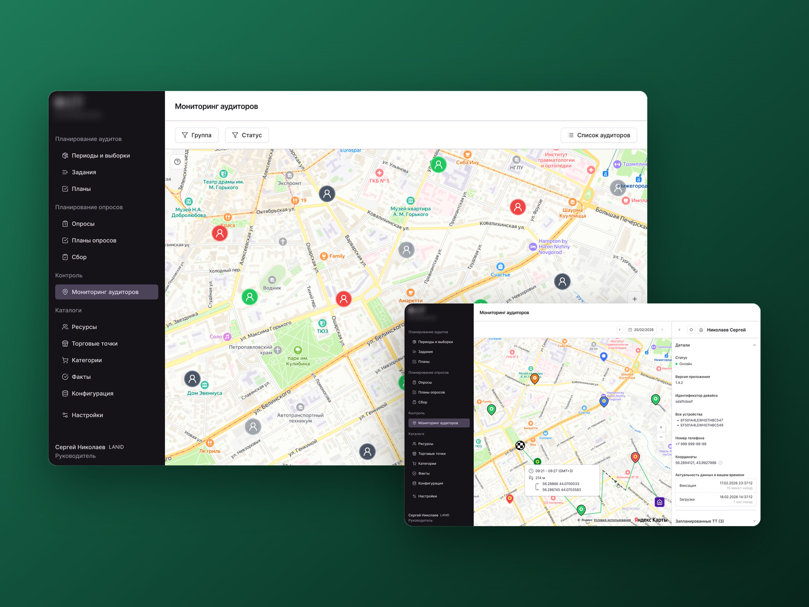
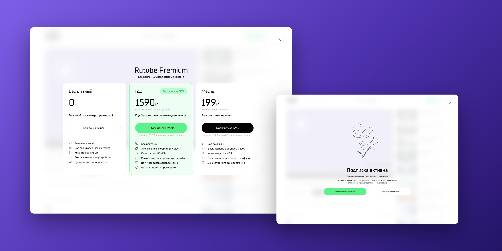
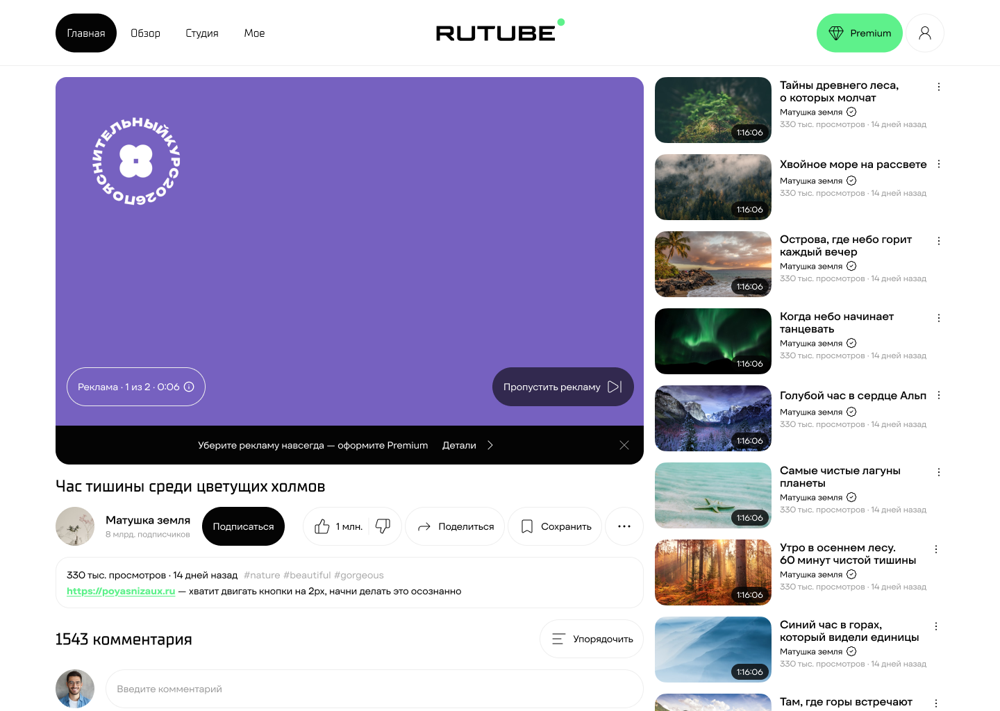
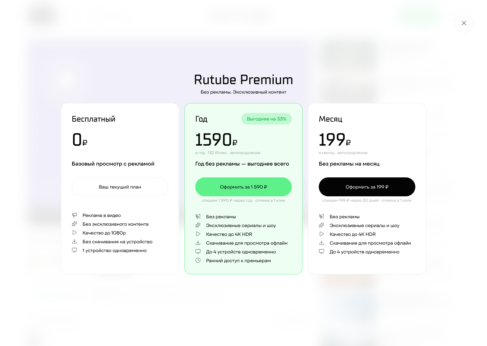
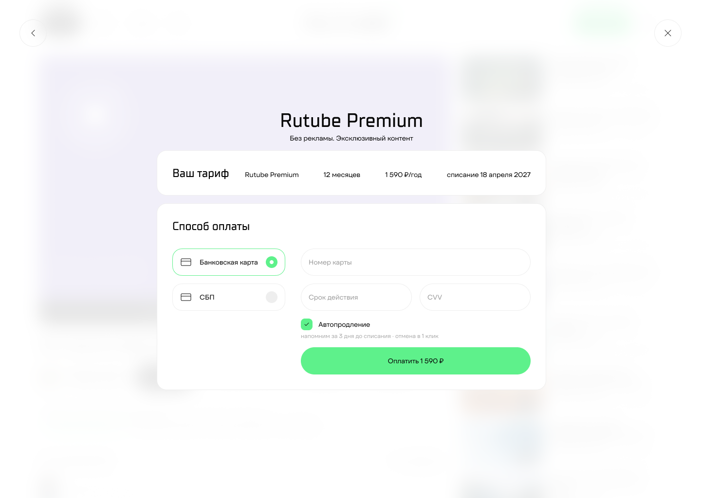
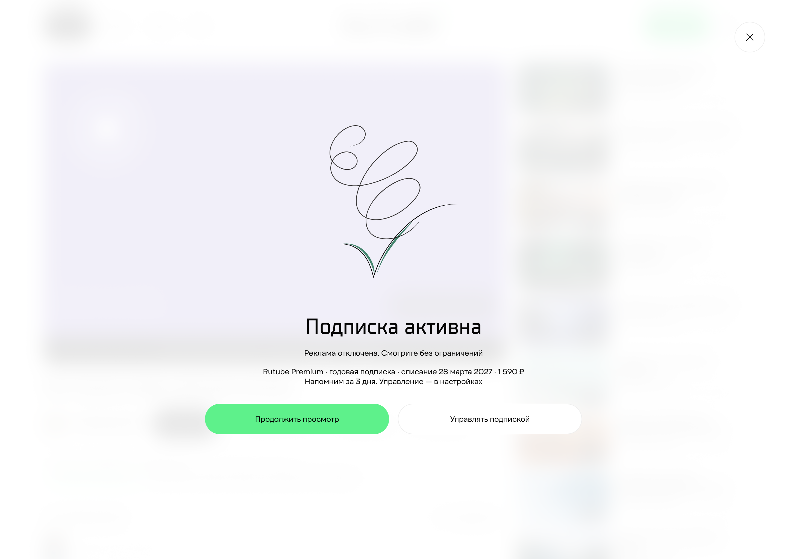
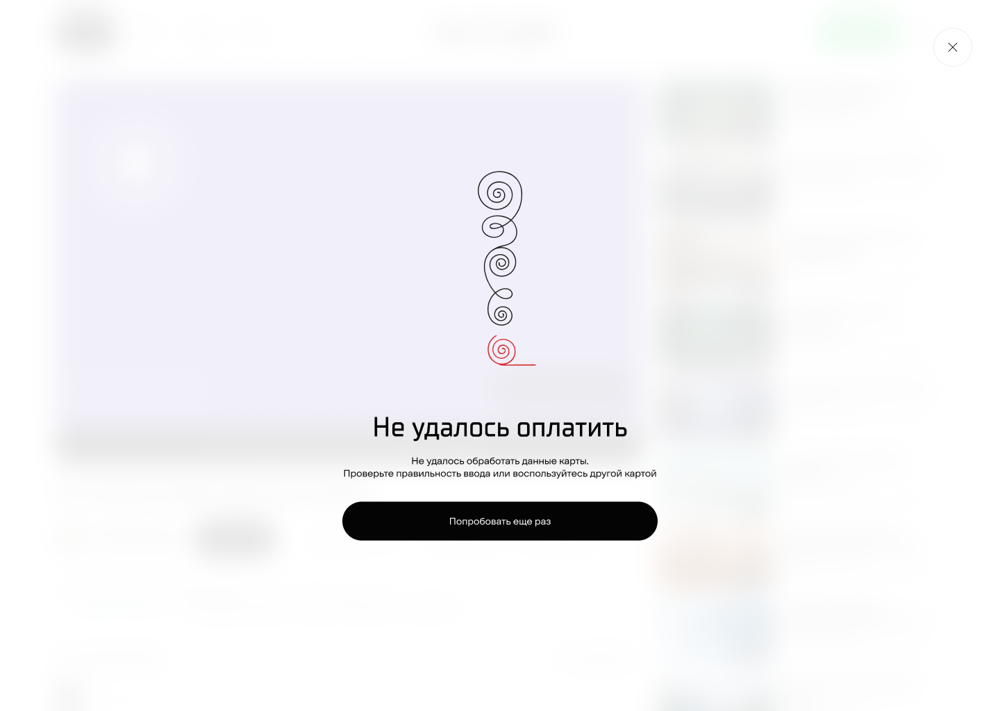
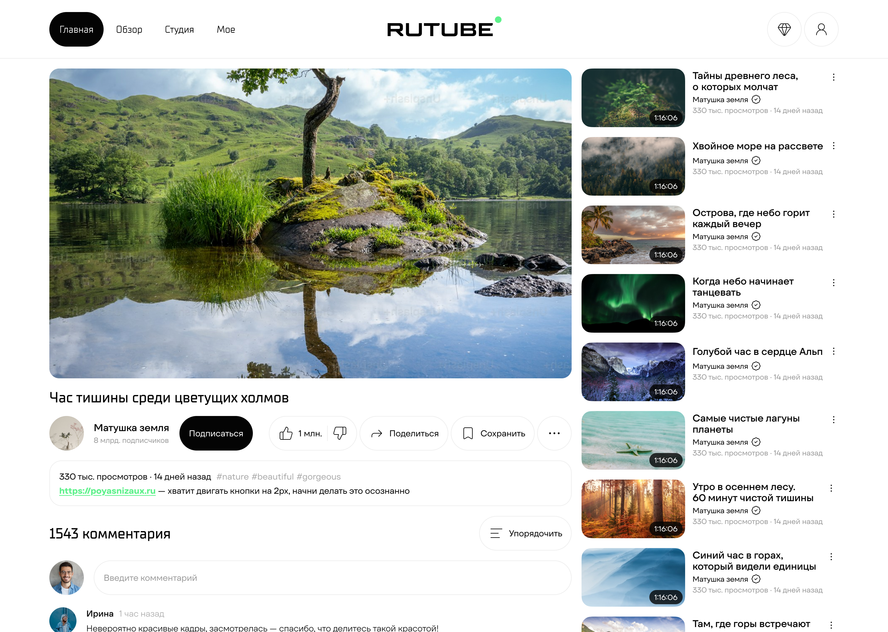
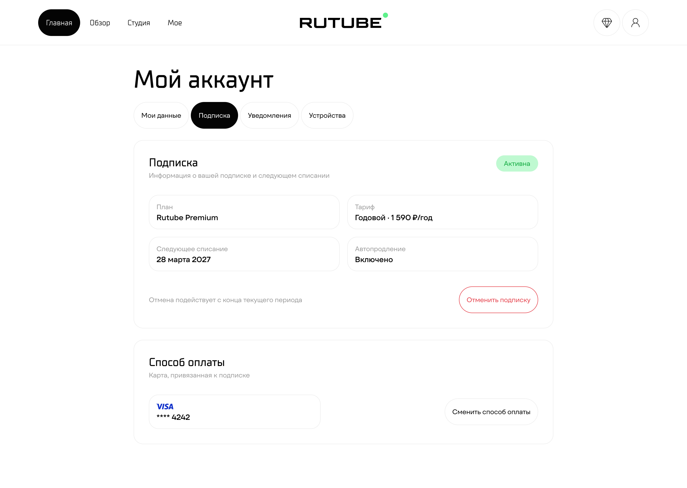
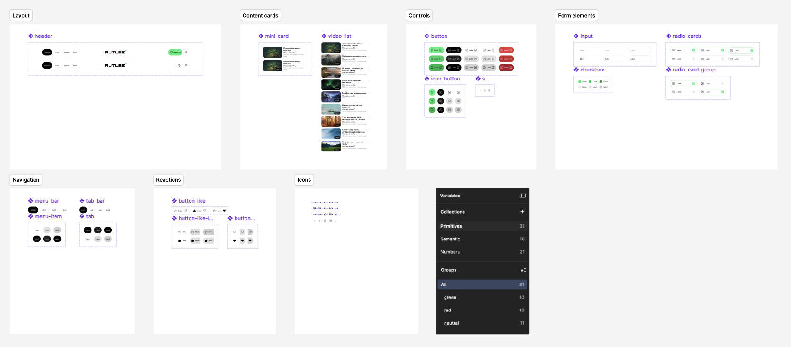

Мониторинг аудиторов
Инструмент менеджера полевого аудита: карта, статусы, маршруты. Менеджеры и заказчики отметили: от звонков полностью ушли.
Редизайн страницы выбора тарифа, оплаты и управления подпиской для сервиса с миллионной аудиторией.

Гипотеза подтвердилась на юзабилити-тесте с тремя респондентами: боли обоих архетипов закрыты, критерии успеха выполнены на 100%. SUS 91.7 из 100, SEQ 6.3 из 7. Шесть шагов из семи пройдены. Респондентов трое, а проект учебный, поэтому цифры показывают направление, а не статистику.
5 секунд, не растерялся и сразу выбрал СБП
«Не удалось обработать данные карты — давайте попробуем ещё раз, но уже, наверное, лучше СБП».
15 секунд
«Подписка активна, реклама отключена, вижу следующее списание. Даже напоминалка будет — зашибись».
Путь пользователя от просмотра с рекламой до управления подпиской: выбор тарифа, оплата, ошибка и повторная оплата, подтверждение.








Весь цикл: интервью, конкурентный анализ, архетипы, CJM, ключевые экраны, система токенов и UI kit, юзабилити-тест.
Найдены две точки роста: экран ошибки воспринимается как тупик, кнопка отмены на экране успеха визуально слабая. Следующий шаг — переделать оба места и проверить их на повторном тесте.

Инструмент менеджера полевого аудита: карта, статусы, маршруты. Менеджеры и заказчики отметили: от звонков полностью ушли.

Админ-панель установки оборудования: группы, установщики и транспорт в одном портале. В проде, им пользуются до сих пор.

Дизайн-система продукта мониторинга дорожных аномалий: 50+ компонентов, 377 переменных. Используют до сих пор.